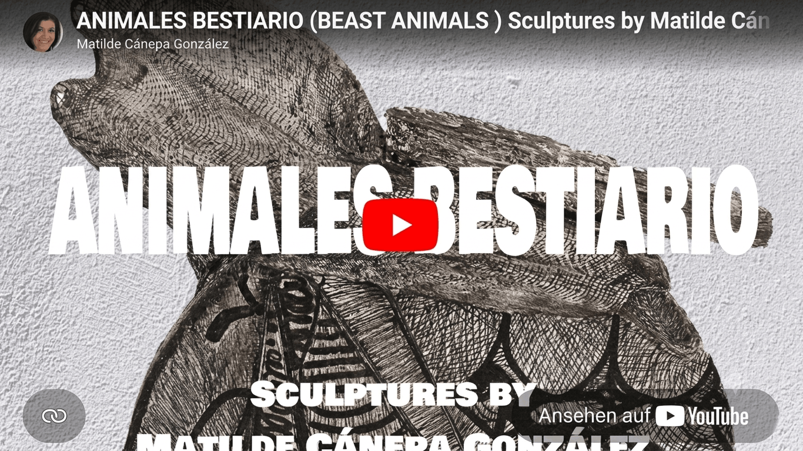
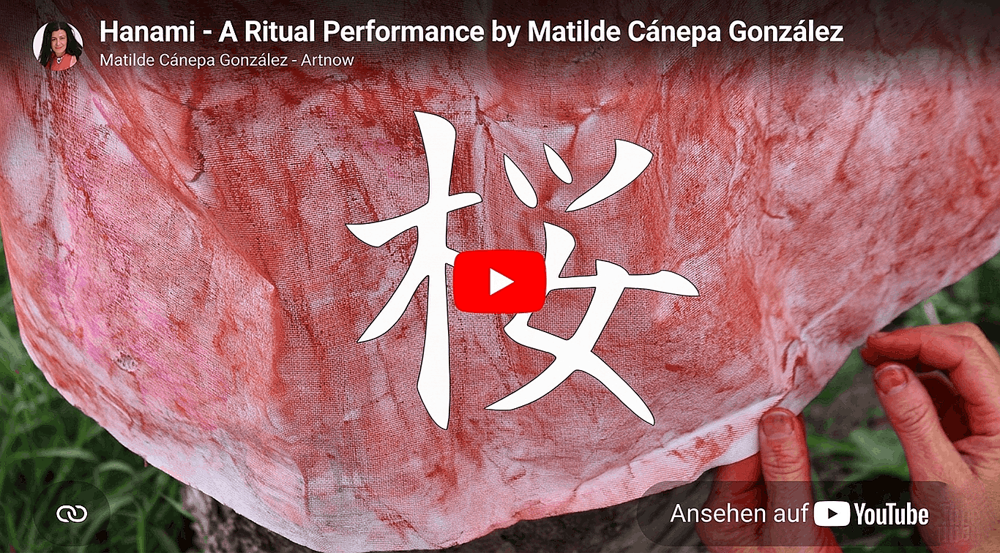
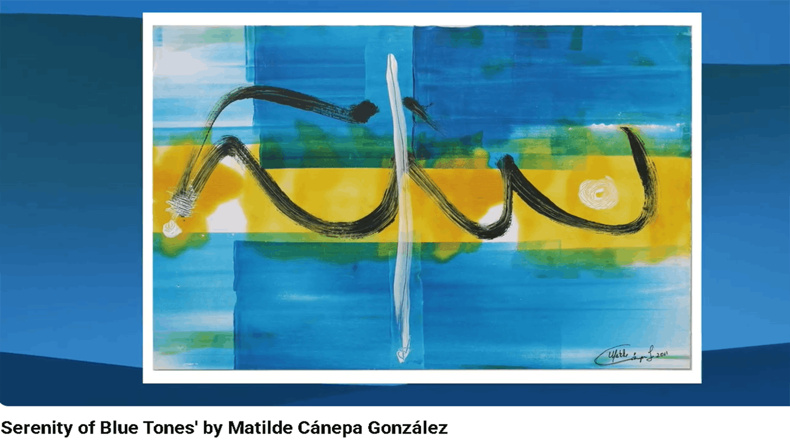
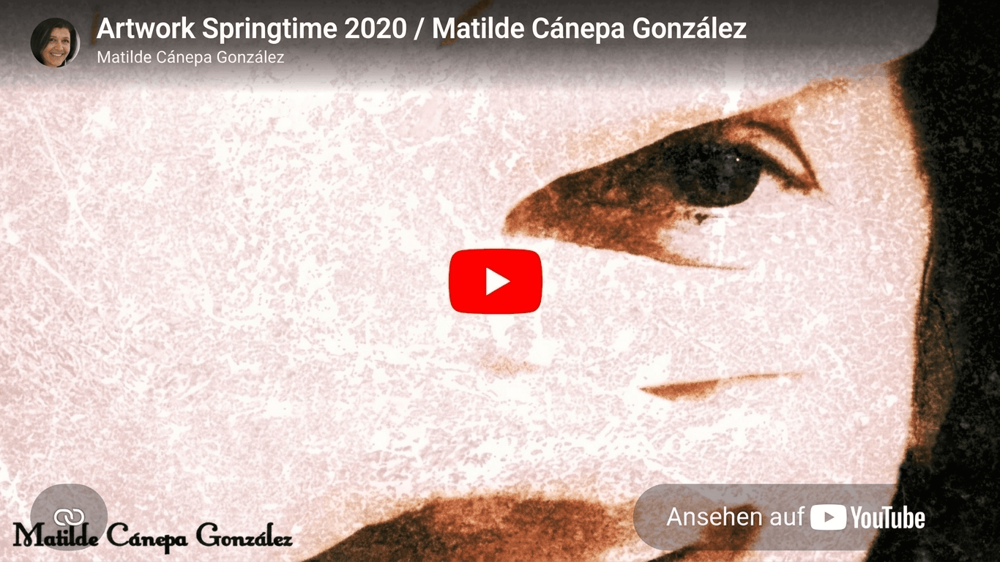
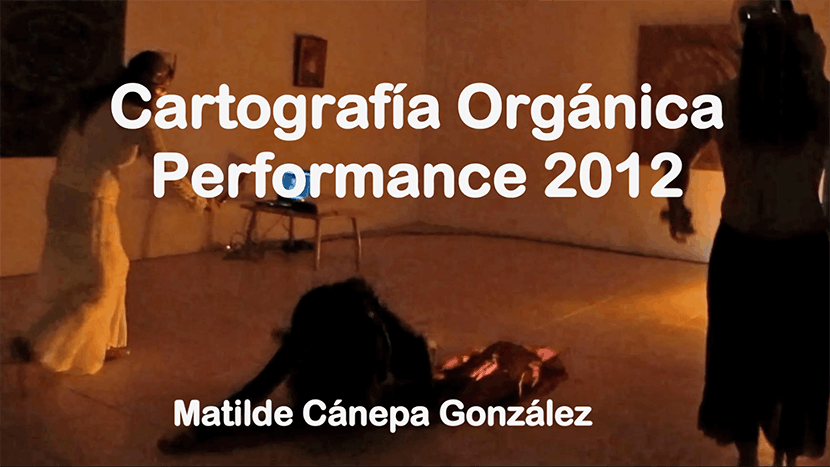
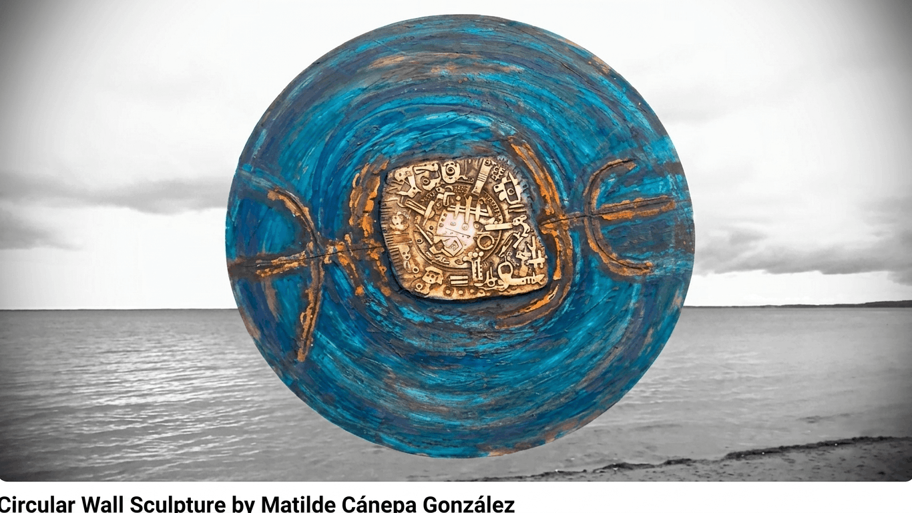

Videos –
Wenn Bilder in Bewegung geraten
Diese kurzen Filme verwandeln Kunstwerke, Fotografien und Performances in bewegte Bildgeschichten. Von Musik begleitet führen sie die Reise über das stehende Bild hinaus – klicke auf ein Bild, um das Video auf YouTube anzusehen.

Bestiarium – Fünf Skulpturen
Beim Formen und Gestalten entstanden nach und nach Wesen, die ich selbst kaum erklären konnte. Dieses Bestiarium erzählt von meiner Suche nach den Wurzeln, die ich einst zurückgelassen habe. Manchmal müssen wir weit weg von zu Hause wachsen, um uns selbst näherzukommen.
Drei Skulpturen entstanden in Caracas, als ich nach meiner tierischen Seele suchte. Die übrigen fanden später auf Teneriffa, in der Ruhe der Insel, ihre Gestalt.
Es sind hybride Wesen, stille Gefährten im Schweigen. Keine Monster, sondern Wegbegleiter zwischen Tag und Nacht, zwischen dem Vertrauten und dem Unbekannten.

Mein Hanami – Ritualperformance, Berlin 2022
Wir erreichen den Weg der Kirschbäume und lassen die letzten Spuren der Mauer hinter uns, die Deutschland einst teilte. Diese Zeit ist vorbei. Unter den rosa Blüten lausche ich den Vögeln und lasse die Spannungen der Gegenwart von mir abfallen.
Wo einst eine Mauer der Gewalt stand, wachsen heute Sakura-Kirschbäume – ein Geschenk aus Japan, überbracht in der Sprache der Blumen. Unter den Bäumen zu liegen und durch die rosa Zweige in den blauen Himmel zu schauen, öffnet das Herz. In diesem Augenblick entstand meine Absicht: Kunst als symbolisches Fest zu feiern.

Die Stille der Blautöne
Blau breitet sich aus wie ein leiser Atemzug über Wasser und Himmel. Ich beginne mit Monotypien, die ich Schicht für Schicht mit Acryl weiterentwickle. Dabei lasse ich mich vom Zufall leiten, ohne meine eigene Absicht aus den Augen zu verlieren. Zwischen Ruhe und Bewegung entstehen kühle Farbräume, in denen warme Töne aufscheinen wie Erinnerungen aus der Ferne und dem Bild Licht und Ausgewogenheit verleihen.
Aus Strukturen, Spuren und durchscheinenden Schichten wächst eine Landschaft, die man weniger sieht als spürt. Ich lade dich ein, einen Moment zu verweilen, zur Ruhe zu kommen und dich von der stillen Poesie der Farben treiben zu lassen.

Frühling 2020 – Zeichnungen aus dem Lockdown
In den stillen Monaten des Lockdowns wurde das Zeichnen zu einem täglichen Ritual. Vom Fenster meines Ateliers aus beobachtete ich, wie der Frühling den Garten langsam zurückeroberte, Blüte für Blüte. Dabei hielt ich das wechselnde Licht und den Rhythmus der Natur in meinen Skizzen fest.
Diese Zeichnungen sind Spuren einer Zeit, die von Stille, Nachdenken und aufmerksamem Beobachten geprägt war. Sie erzählen vom Zusammenspiel meiner inneren Welt mit der erwachenden Natur draußen. Dieses Video zeigt Ausschnitte aus meinem Gemälde Frühling 2020, das in jenen Tagen der Stille und des Neubeginns entstanden ist.

Cartografía Orgánica – Performance
In Cartografía Orgánica begegnet meine Bildwelt der Musik Travesía por la paz von Damelis Castillo. Gemeinsam führen sie durch innere Landschaften, in denen organische Formen wie Spuren von Erinnerung, Natur und Verwandlung auftauchen.
Die Performance geht aus einer rituellen Reinigung hervor. Das Feuer wird zum Zeichen für Wandel und Erneuerung. In seiner Mitte entzünde ich eine spiralförmige Form – Sinnbild einer Reise nach innen und der stetigen Bewegung des Lebens. In den Flammen gehen Loslassen und Neubeginn ineinander über. Bild, Bewegung und Musik verschmelzen zu einer stillen Meditation über Verwandlung, Erinnerung und inneren Frieden.

Runde Wandskulptur – Spuren der Stille
Manche Spuren bleiben, auch wenn die Zeit vergeht. Sie setzen sich im Holz, im Ton und im Kupfer fest, mit denen ich arbeite, und bewahren etwas von dem, was sonst verloren gehen könnte. In diesen Kreisen füge ich Fragmente um eine verborgene Mitte zusammen: Zeichen, die an Vergessenes erinnern, Bruchstücke möglicher Geschichten und Formen, deren Bedeutung sich erst in der Stille erschließt.
Mit Spuren der Stille nähere ich mich dem, was sich kaum in Worte fassen lässt: den unsichtbaren Schichten von Erfahrung, Erinnerung und Zeit, die in uns weiterleben. Was einst war, verschwindet nicht immer. Manches bleibt zurück, verwandelt sich und klingt in der Gegenwart leise nach.
Dieses Werk, Silencios que sobreviven I, gehört zur Skulpturen-Kollektion.